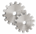

Initially, the Tools area is inactive. To make the Tools area active, first establish a port connection on the PC using the Connect option from the Device menu.
Modem Managing mode is intended for configuring Topcon and 3rd party modems.
In Modem Managing mode, you see

(the Settings icon) in the tools area.|
|
Initially, the Tools area is inactive. To make the Tools area active, first establish a port connection on the PC using the Connect option from the Device menu. |
When in the Modem Managing mode, the Application tries to detect a modem at the time of connection. If there is no modem, or if it doesn't respond, a connection cannot be established.
The Settings icon opens a dialog that displays the modem's settings, and allows changing the settings and invoking modem functions.